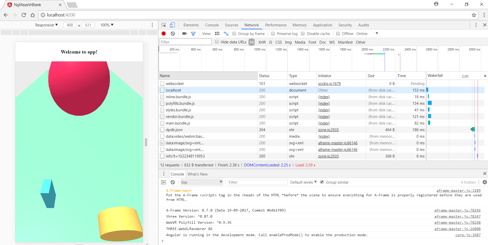
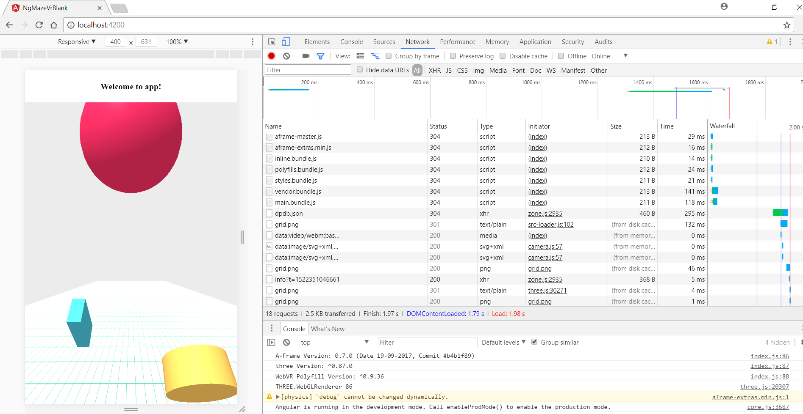
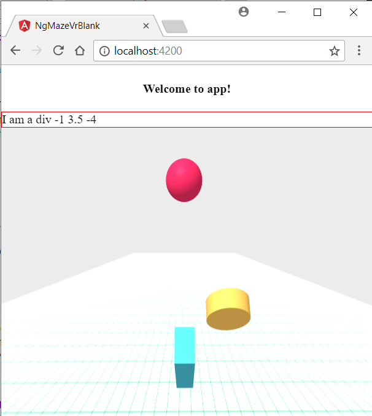

Dependency management in Angular CLI - Lib: A-Frame
Posted on March 29, 2018 in Develop Updated: May 12, 2018
Using 3rd party libraries in Angular 2+ takes a while to become friends with. In this blog the Virtual Reality library A-Frame is what I want to use together with Angular CLI (Currently using Ng core: 5.2.0, Ng cli: 1.7.3).
Code from the post can be found here.
Problem #1 - Angular by default expects to know all html elements
Given some A-Frame html (in this case separated in its own ng component) - aframe-vr.component.html having selector: 'aframe-vr' in class AframeVrComponent
<!-- src/app/components/aframe-vr.component.html -->
<a-scene>
<a-box position="-1 0.5 -4" scale="0.25 0.5 1" rotation="-45 0 0" color="#4CC3D9"></a-box>
<a-plane position="0 -1 -4" rotation="-45 0 0" width="15" height="80" color="#7BC8A4"></a-plane>
<a-sky color="#ECECEC"></a-sky>
</a-scene>
Angular will complain:
--- console ---
Uncaught Error: Template parse errors:
'a-box' is not a known element:
1. If 'a-box' is an Angular component, then verify that it is part of this module.
2. If 'a-box' is a Web Component then add 'CUSTOM_ELEMENTS_SCHEMA' to the '@NgModule.schemas' of this component to suppress this message. ("<a-scene>
[ERROR ->]<a-box position="-1 0.5 -4" scale="0.25 0.5 1" rotation="-45 0 0" color="#4CC3D9"></a-box>
Solution #1.1
And as it says there is an easy fix:
// --- app.module.ts ---
import { CUSTOM_ELEMENTS_SCHEMA } from '@angular/core';
@NgModule({
// Allow elements not to be compiled by Angular
schemas: [CUSTOM_ELEMENTS_SCHEMA]
})
Problem #2 - You cannot load A-Frame in the main bundle
I want to load A-Frame just before the component from above.
// --- app.module.ts ---
// Require aframe in main bundle before an aframe component is loaded
import 'aframe';
import 'aframe-extras';
import { AframeVrComponent } from './components/aframe-vr/aframe-vr.component';
In other words - I want to load A-Frame in the main bundle.
Result #2
--- console ---
zone.js:2803 Uncaught TypeError: Cannot assign to read only property 'attributeChangedCallback' of object '[object HTMLElement]'
at eval (zone.js:2803)
at Array.forEach (<anonymous>)
at HTMLDocument.document.registerElement (`zone.js`:2789)
at module.exports.registerElement (`aframe-master.js`:74843)
Sample ng-maze-vr-blank/commit 4 demonstrates the problem.
If you view-page-source of the page you will see
<!-- index.html -->
<body>
<app-root></app-root>
<script type="text/javascript" src="inline.bundle.js"></script>
<script type="text/javascript" src="polyfills.bundle.js"></script>
<script type="text/javascript" src="styles.bundle.js"></script>
<script type="text/javascript" src="vendor.bundle.js"></script>
<script type="text/javascript" src="main.bundle.js"></script>
</body>
zone.js is stored in polyfills.bundle.js,
aframe-master.js (and all other node_modules from package.json) is stored in vendor.bundle.js and in
main.bundle.js the error is thrown when we try to load A-Frame with import 'aframe';
Tip: Do also install aframe types (so you can use it in TypeScript) by adding
// --- package.json ---
"devDependencies": {
"@types/aframe": "^0.7.0",
More details on @types: 3rd Party Library Installation
The blog ´A-frame with Angular´ will tell you that you need to load A-Frame earlier - before zone.js. It suggests polyfills.js.
Solution attempt #2.1
Angular CLI has a way to load libraries globally, as if they were in script tags.
- Remove the aframe import from app.module.ts
- Add the A-Frame library to Angular Cli config
// --- .angular-cli.json ---
"apps": [
{
"scripts": [
"../node_modules/aframe/dist/aframe-master.js",
"../node_modules/aframe-extras/dist/aframe-extras.min.js"
],
Result #2.1
If you view-page-source of the page you will see
<!-- index.html -->
<body>
<app-root></app-root>
<script type="text/javascript" src="inline.bundle.js"></script>
<script type="text/javascript" src="polyfills.bundle.js"></script>
<script type="text/javascript" src="styles.bundle.js"></script>
<script type="text/javascript" src="scripts.bundle.js"></script>
<script type="text/javascript" src="vendor.bundle.js"></script>
<script type="text/javascript" src="main.bundle.js"></script></body>
New is ´scripts.bundle.js´.
But still we have an error:
--- console ---
zone.js:2803 Uncaught TypeError: Cannot assign to read only property 'attributeChangedCallback' of object '[object HTMLElement]'
at eval (zone.js:2803)
at Array.forEach (<anonymous>)
at HTMLDocument.document.registerElement (zone.js:2789)
at module.exports.registerElement (scripts.bundle.js:74843)
zone.js is stored in polyfills.bundle.js,
aframe-master.js is stored and loaded in scripts.bundle.js and
all other node_modules from package.json is stored in vendor.bundle.js.
The error is thrown when we try to auto-load A-Frame inside scripts.bundle.js.
The common pattern is again that A-Frame is loaded after zone.js.
Sample ng-maze-vr-blank/commit 5 demonstrates the error.
Solution attempt #2.2
scripts.bundle.js is loaded after polyfills.bundle.js
As the blog ´A-frame with Angular´ told you, you needed to load A-Frame before zone.js.
So this time we go one more level up to polyfills.
- Remove the scripts in
.angular-cli.json(or just rename the scripts property)
// --- .angular-cli.json ---
"apps": [
{
"someUnusedScripts": [
"../node_modules/aframe/dist/aframe-master.js",
"../node_modules/aframe-extras/dist/aframe-extras.min.js"
],
- Add aframe to polyfills before zone.js
// --- src/polyfills.ts ---
// Load aframe before zone.js
import 'aframe';
import 'aframe-extras';
import 'zone.js/dist/zone'; // Included with Angular CLI.
Result #2.2
Now A-Frame is loaded in polyfills.bundle.js before zone.js and A-Frame content is rendered

Sample ng-maze-vr-blank/commit 6 shows the result.
Problem #3 - Some A-Frame extras doesn't render
If you want to replace the floor <a-plane> with the floor from A-Frame extras <a-grid> you can't see it. This happens with following change:
<!-- src/app/components/aframe-vr.component.html -->
<!-- <a-plane position="0 -1 -4" rotation="-45 0 0" width="15" height="80" color="#7BC8A4"></a-plane> -->
<a-grid position="0 -1 -4" rotation="-90 0 0" static-body width="15" height="80" color="#7BC8A4"></a-grid>
Solution #3
Now we will move loading of A-Frame even further up from polyfills to the <head>
- Remove A-Frame from polyfills
// --- src/polyfills.ts ---
// Load aframe before zone.js
//import 'aframe';
//import 'aframe-extras';
import 'zone.js/dist/zone'; // Included with Angular CLI.
- In Ng Cli config copy A-Frame dist to assets
// --- .angular-cli.json ---
"apps": [
{
"assets": [
{ "glob": "**/*", "input": "../node_modules/aframe/dist", "output": "./assets/lib/aframe/dist/" },
{ "glob": "**/*", "input": "../node_modules/aframe-extras/dist", "output": "./assets/lib/aframe-extras/dist/" }
],
Link: Copy assets via angular-cli
- In index.html head load A-Frame + extras
<!-- src/index.html -->
<head>
<script src="assets/lib/aframe/dist/aframe-master.js"></script>
<script src="assets/lib/aframe-extras/dist/aframe-extras.min.js"></script>
</head>
Result #3 - Commit 7
Now A-Frame is loaded already in the <head> before polyfills.bundle.js and also <a-grid> is rendered

Sample ng-maze-vr-blank/commit 7 shows the result.
Problem #4 - When using <script> for loading, then @types are not loaded and you cannot use the types in code
Having the libraries loaded now I want to use them in code. Example:
class VrBox {
position: string;
constructor(pos: AFrame.Coordinate) {
this.position = AFRAME.utils.coordinates.stringify(pos);
}
}
WebPack complains:
error TS2552: Cannot find name 'AFRAME'. Did you mean 'frames'
error TS2503: Cannot find namespace 'AFrame'.
Solution #4a
If you did not have the @types/aframe you could define the types yourself
declare var AFRAME: any;
declare namespace AFrame{
interface Coordinate{}
}
Solution #4b
But since you have the @types/aframe you instead just can import them
// src/app/components/aframe-vr.component.ts
/// <reference types="aframe" />
// Above ref is needed when aframe is loaded from <script> instead of
// import 'aframe';
// It will use the types from @types/aframe
Result #4 - Commit 10
Now we can use A-Frame library in our code.
Sample ng-maze-vr-blank/commit 10 shows the result.
Problem #5 - A-Frame doen't work with Angular binding
Next up is to use Angular binding. In this case I want to create <a-box>'s from a list of data.
Looping through the list with *ngFor is not a problem, but setting the position proporty does not work.
In the view a div on top of A-Frame demonstrates how *ngFor sets a property.
But in the a-scene the same way of binding does not work. The created <a-box> is put in position "0 0 0". You have to go backwards to see the box. It is behind you.
<!-- src/app/components/aframe-vr.component.html -->
<div>
<div class="box" *ngFor="let b of vrBoxes" [title]="b.position">I am a div {{b.position}}</div>
</div>
<a-scene #scene>
<!-- <a-box position="-1 0.5 -4" scale="0.25 0.5 1" rotation="-45 0 0" color="#4CC3D9"></a-box> -->
<a-box *ngFor="let b of vrBoxes" [position]="b.position" scale="0.25 0.5 1" rotation="-45 0 0" color="#4CC3D9"></a-box>
</a-scene>

Sample ng-maze-vr-blank/commit 11 demonstrates this situation.
So what are the options?
Initially I picked options like these:
- Create an Angular wrapper component.
zefoy/ngx-ace-wrapper is an example of a wrapper.
ZEF has a handfull of other wrappers - Publish to npm: Building an Angular 4 Component Library with the Angular CLI and ng-packagr
- Create a Web Component wrapper component
Publishing a Web Component Using Stencil (And Using It Anywhere) - Build and use a Web Component from Angular: seveves/angular-stencil
The first attempt I did was to look at the seveves/angular-stencil repo and tried to see if I could bind A-Frame in a Stencil web component.
That attempt failed. Repo is here: rasor/stencil-aframe.
Notice: In that repo I am using the latest version of A-Frame: 0.8.0.
Angular components builds on the web components-way of doing things - e.g. using ShaowDom. So I think, when binding with web components does not work, then I should not expect to getting it to work in Angular either.
So what are the options, when ShadowDom does not play well with A-Frame?
Well trusktr actually found a way to deal with Shadow DOM, which he find easy, but to me is protocol workaround - a low level protocol change, which should not be necessary to twist as library a user.
So when I don't want to make ShadowDOM workaround, then what are the options?
- Use trusktrs Infamous library (repo here) instead of A-Frame. Infamous supports Web Components (and Angular).
- A-Frames creator ngokevin recommends using NunJucks/Static Templating:
I currently recommend using vanilla A-Frame and aframe-state-component with static templating over aframe-react.
To be continued...
Links
- Declare lib + plugin and load globally in angular-cli
- More on zone.js: What the hell is Zone.js and why is it in my Angular 2?
- Lots of other Angular CLI tricks
- Angular CLI Config Schema
- TypeScript Compiler Options
The End